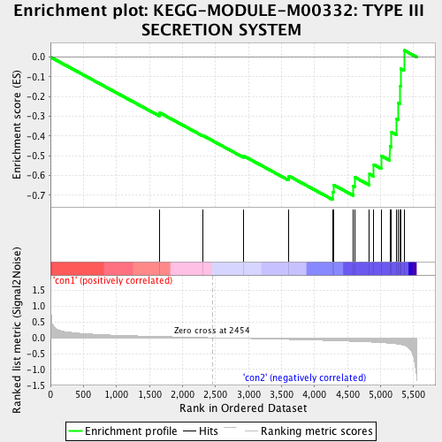
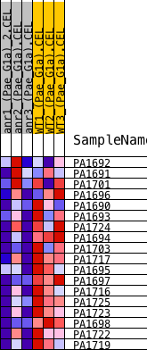
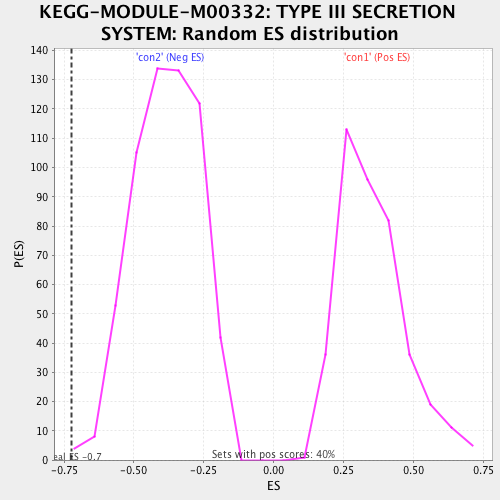

| | | Dataset | Anr_gene.AnrvsWT.cls#con1_versus_con2 |
| Phenotype | AnrvsWT.cls#con1_versus_con2 |
| Upregulated in class | con2 |
| GeneSet | KEGG-MODULE-M00332: TYPE III SECRETION SYSTEM |
| Enrichment Score (ES) | -0.7223687 |
| Normalized Enrichment Score (NES) | -1.886482 |
| Nominal p-value | 0.0016638935 |
| FDR q-value | 0.00969387 |
| FWER p-Value | 0.078 |
Table: GSEA Results Summary

Fig 1: Enrichment plot: KEGG-MODULE-M00332: TYPE III SECRETION SYSTEM
Profile of the Running ES Score & Positions of GeneSet Members on the Rank Ordered List
| PROBE | DESCRIPTION
(from dataset) | GENE SYMBOL | GENE_TITLE | RANK IN GENE LIST | RANK METRIC SCORE | RUNNING ES | CORE ENRICHMENT | | 1 | PA1692 | na | | | 1649 | 0.041 | -0.2808 | No |
| 2 | PA1691 | na | | | 2307 | 0.007 | -0.3967 | No |
| 3 | PA1701 | na | | | 2924 | -0.019 | -0.4998 | No |
| 4 | PA1696 | na | | | 3611 | -0.052 | -0.6018 | No |
| 5 | PA1690 | na | | | 4279 | -0.090 | -0.6840 | Yes |
| 6 | PA1693 | na | | | 4293 | -0.091 | -0.6477 | Yes |
| 7 | PA1724 | na | | | 4589 | -0.113 | -0.6532 | Yes |
| 8 | PA1694 | na | | | 4611 | -0.115 | -0.6083 | Yes |
| 9 | PA1703 | na | | | 4834 | -0.132 | -0.5923 | Yes |
| 10 | PA1717 | na | | | 4899 | -0.140 | -0.5446 | Yes |
| 11 | PA1695 | na | | | 5014 | -0.153 | -0.5001 | Yes |
| 12 | PA1697 | na | | | 5143 | -0.172 | -0.4502 | Yes |
| 13 | PA1716 | na | | | 5167 | -0.176 | -0.3796 | Yes |
| 14 | PA1725 | na | | | 5243 | -0.192 | -0.3117 | Yes |
| 15 | PA1723 | na | | | 5272 | -0.200 | -0.2321 | Yes |
| 16 | PA1698 | na | | | 5301 | -0.210 | -0.1480 | Yes |
| 17 | PA1722 | na | | | 5309 | -0.212 | -0.0593 | Yes |
| 18 | PA1719 | na | | | 5358 | -0.241 | 0.0344 | Yes |
Table: GSEA details [plain text format]

Fig 2: KEGG-MODULE-M00332: TYPE III SECRETION SYSTEM
Blue-Pink O' Gram in the Space of the Analyzed GeneSet

Fig 3: KEGG-MODULE-M00332: TYPE III SECRETION SYSTEM: Random ES distribution
Gene set null distribution of ES for KEGG-MODULE-M00332: TYPE III SECRETION SYSTEM